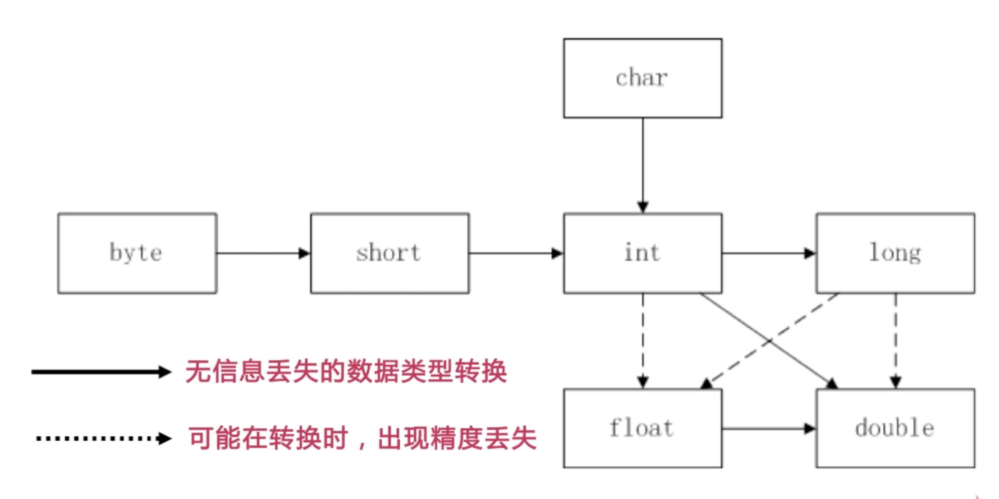
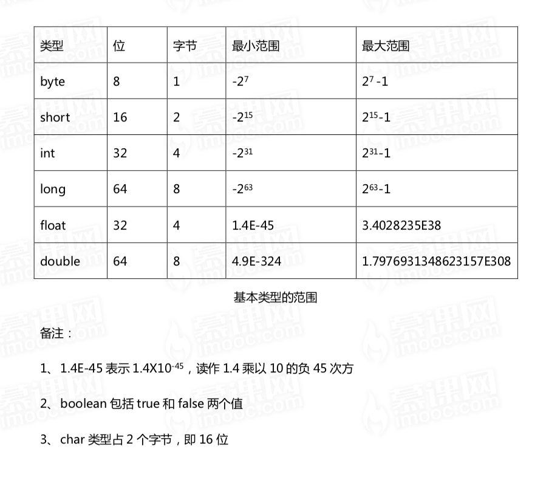
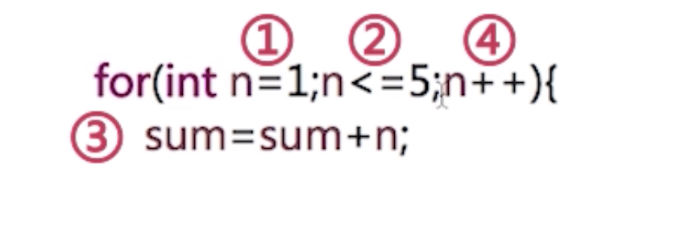
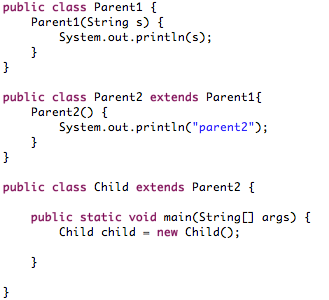

来源于慕课网Java零基础入门
好多基础的东西都忘记了，补起来！！
基础概念
JDK Java Development Kit （开发者）
- javac 将源程序转换成字节码
- java 运行编译后的java程序(.class后缀)
JRE Java Runtime Environment （使用者）
- 包括Java虚拟机（JVM）和Java核心类库以及支持文件
JDK = JRE + 开发工具集（javac）
JRE = JVM + JavaSE标准类库
Java类型
float f=12.3是错误的，12.3默认为double类型，会报错Unicode编码 加前缀 ‘\u’
- char c = ‘\u500d’;
科学计数法
- 10的五次方 double d = 1.234E5;
强制类型转换

- 数据表示范围

- 随机生成1-10之内的整数
1 | int data = (int)(Math.random()*10+1); |
Java流程控制语句
switch 内只能是 String, char或int 类型，不能是别的类型
while ( ... ); { }死循环，不会执行花括号中的内容for循环语句执行顺序

1 | for(int i=0;i<2;i++){ |
Java方法
方法重载：
- 方法名相同且方法参数列表不同，
- 参数列表不同包括参数的 数量不同，以及参数的 数据类型不同
- 算
public void show(){}和public void show(int num){} - 不算
public void show(){}和public int show(){}
可变参数
public void sum(int n, int... a) {}- 等价于
public void sum(int n, int[] a) {}
变参定参优先级
- sum(int a, int b) > sum(int… a)
帮助文档
1 | javadoc -d doc ...java |
Java 面向对象
对象实例化分为两步
- 声明对象 Cat cat
- 在内存的栈中开辟一个空间cat，null
- 实例化对象 new Cat()
- 将声明的对象指向具体实例化的堆空间
- 声明对象 Cat cat
通过
this()调用同一个类中的无参构造方法通过
this(args..)调用有参构造方法但是必须要放在 第一行构造代码块
- 在构造函数之前，在对象实例化时被调用，与静态成员执行顺序没有特定的要求, 每次都执行
1 | { |
- 静态代码块
- 先于构造代码块执行，载入类的时候执行一次，后面就不在执行
1 | static { |
访问修饰符
- projected 跨包子类可以
- 默认 跨包子类不可以
继承关系的初始化顺序 ，子类构造方法中默认调用父类无参构造方法，如果没有则会编译报错，在子类实例化的时候优先调用父类的构造函数，所以 无参构造很重要

编译错误：没有找到构造器Parent1()
类有继承时初始化的顺序：父类静态成员 –> 子类静态成员 –> 父类对象构造 –> 子类对象构造
super()和this()关键词不能同时在构造函数中出现，因为它们都要抢占第一位的位置方法重写 vs 方法重载
1 | 方法重写 方法重载 |
- 类成员被final修饰可以被赋值的地方：定义处，构造函数内（若有无参构造函数则必须在它里面初始化），构造代码块